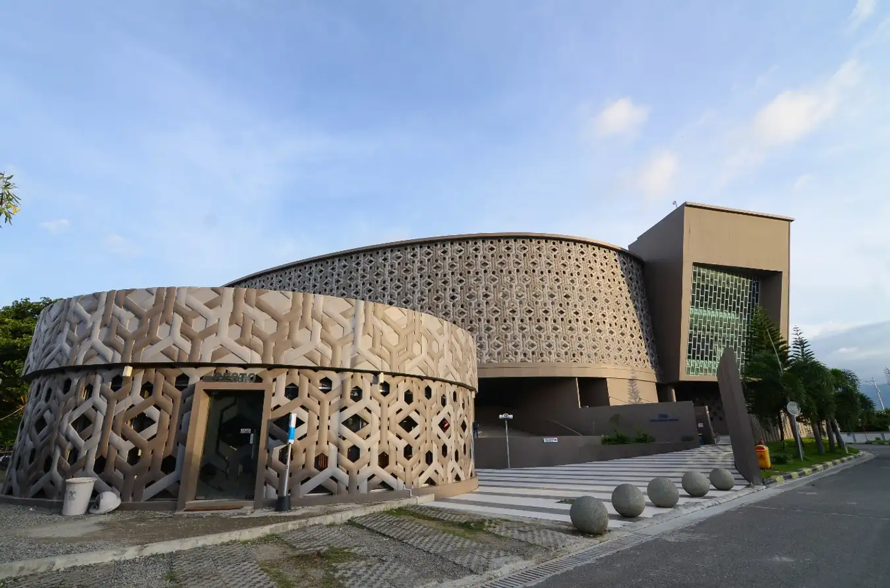
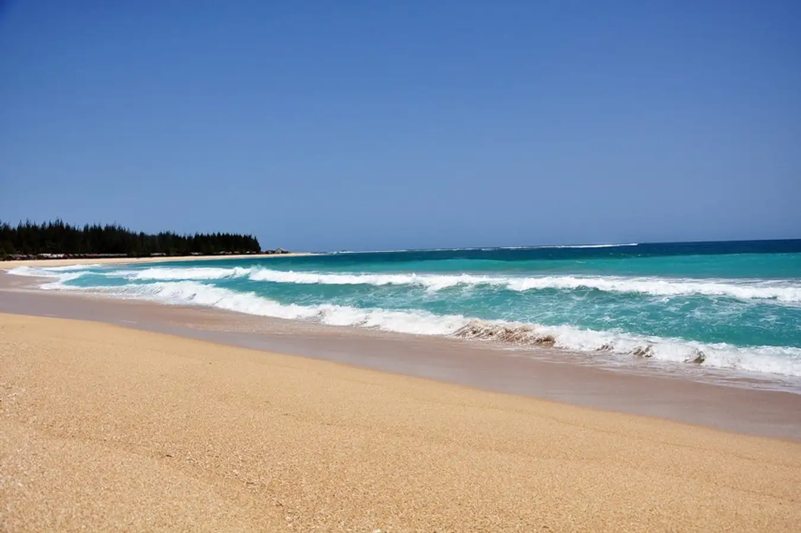

Sejarah

Banda Aceh dikenal sebagai tua yang erat kaitannya dengan sejarah gemilang Kerajaan Aceh Darussalam. Di masa kesultanan, Banda Aceh dikenal sebagai Bandar Aceh Darussalam. Kota ini dibangun oleh Sultan Johan Syah pada hari Jumat, tanggal 1 Ramadhan 601 H (22 April 1205 M). Saat ini, Banda Aceh telah berusia 813 tahun. Banda Aceh merupakan salah satu kota Islam Tertua di Asia Tenggara. Kota Banda aceh juga memerankan peranan penting dalam penyebaran islam ke seluruh Nusantara/ Indonesia. Oleh karena itu, kota ini juga dikenal sebagai Serambi Mekkah.
Di masa jayanya, Bandar Aceh Darussalam dikenal sebagai kota regional utama yang juga dikenal sebagai pusat pendidikan islam. Oleh karena itu, kota ini dikunjungi oleh banyak pelajar dari Timur Tengah, India dan Negara lainnya. Bandar Aceh Darussalam juga merupakan pusat perdagangan yang dikunjungi oleh para pedagang dari seluruh dunia termasuk dari Arab, Turki, China, Eropa, dan India. Kerajaan Aceh mencapai puncak kejayaan saat dipimpin oleh Sultan Iskandar Muda (1607-1636), yang merupakan tokoh legendaris dalam sejarah Aceh.
Banyak dari pelajar dan pedagang pendatang ini akhirnya menetap di Aceh dan menikah dengan wanita lokal. Hal ini menyebabkan adanya pembauran budaya. Hingga saat ini, budaya-budaya masih menyisakan pemandangan di sudut-sudut kota Banda Aceh. Misalnya di Budaya Pecinan di Gampong Peunayong dan peninggalan kuburan Turki di Gampong Bitai.
wisata
Wisata di Banda Aceh-Nanggroe Aceh Darussalam merupakan provinsi yang terletak di ujung barat Pulau Sumatera. Ibu kotanya adalah Banda Aceh atau sering juga disebut Serambi Mekkah. Banda Aceh dikenal memiliki sejumlah wisata religi. Selain itu, tsunami yang terjadi pada 2004 silam juga meninggalkan kesan yang mendalam. Di sini, pengunjung bisa mengunjungi objek wisata edukasi terkait bencana tersebut.
Museum Tsunami

Salah satu tempat di Banda Aceh yang banyak dikunjungi adalah Museum Tsunami Aceh. Museum ini Bukan hanya sebagai monumen simbolis, tempat ini juga disulap menjadi pusat pendidikan bencana. Apabila bencana yang sama terjadi lagi, Museum Tsunami pun dapat menjadi tempat perlindungan darurat bagi warga di sekitarnya.
Saat berkunjung ke sini, kamu bisa melihat dan merasakan langsung simulasi elektronik gempa dan tsunami yang pernah terjadi di Aceh. Selain itu, ada pula foto dan kisah para warga yang selamat dari tsunami. Di bagian lain, ada ruangan yang dinamai “Sumur Doa”. Di dinding ruangan tersebut, tertulis nama-nama korban yang tidak selamat saat bencana.
Hal yang unik dari museum ini adalah desainnya. Dari luar, museum tampak seperti kapal penyelamat yang memiliki geladak luas. Namun, saat terlihat dari atas, bentuknya seperti gelombang tsunami.
Pantai Lampuuk

Salah satu objek wisata yang terletak di Lhoknga, Aceh Besar, yaitu Pantai Lampuuk. Garis pantai sepanjang 5 kilometer dihiasi pasir putih dan air laut yang biru kehijauan. Kondisi ombaknya juga tenang. Uniknya, bukan hanya pemandangan pantai saja yang bisa kamu nikmati di sini. Pepohonan pinus yang tumbuh subur dan pegunungan yang hijau menjadi panorama yang tak terlukiskan.
Berkunjung ke Pantai Lampuuk pada sore hari, kamu akan dapat menikmati keindahan matahari terbenam dengan leluasa. Hal ini dimungkinkan karena pantai menghadap ke barat.
Selain bersantai menikmati sunset, ada sejumlah kegiatan lain yang bisa dilakukan oleh wisatawan di sini. Beberapa di antaranya, bermain istana pasir, berselancar, mencoba banana boat, atau mengunjungi konservasi penyu dan juga bisa menikmati keindahan alam.
Tidak perlu khawatir karena fasilitas yang tersedia di sekitar objek wisata sudah tergolong lengkap. Mulai dari tempat makan hingga penginapan, semua lengkap bisa ditemui di Pantai Lampuuk.
Kapal Apung PLTD

Monumen PLTD (Pembangkit Listrik Tenaga Diesel) ini merupakan salah satu saksi bisu bencana tsunami pada 2004 silam. Pada saat kejadian tsunami, kapal apung PLTD seberat 2.600 ton yang tadinya berada di laut ini terseret ombak tsunami dari wilayah perairan Ulee Lheue sejauh 5 kilometer menuju pusat Kota Banda Aceh.
Kapal apung ini sudah berpindah fungsi dari pembangkit listrik menjadi sarana wisata edukasi di Aceh. Saat ini, pengunjung bisa naik ke atas kapal. Di tempat wisata Banda Aceh ini terdapat 2 menara, jalan setapak, air mancur, dan sebuah monumen yang dilengkapi informasi, foto, dan video mengenai tsunami Aceh 2004.